งานศึกษาวิจัยล่าสุด
การทำแผนที่บริเวณตามข้อกำหนดในกฎหมายที่เกี่ยวกับการใช้ประโยชน์ที่ดินภาครัฐโดยประยุกต์ใช้เทคโนโลยี GIS และ Remote Sensing ทำให้ได้แผนที่แนบท้ายกฎหมายที่อยู่ในรูปแบบ digital ที่ให้ความละเอียดถูกต้องสูง สามารถนำไปใช้งานตามสภาพพื้นที่จริงได้อย่างมีประสิทธิภาพ
โครงการบูรณาการข้อมูลด้าน GIS และ RS ที่เกี่ยวข้องกับนโยบายการใช้ประโยชน์ที่ดินภาครัฐในพื้นที่จังหวัดภูเก็ต จึงเป็นโครงการเร่งด่วนที่เรากำลังดำเนินการอยู่
ปัญหาสำคัญในการบังคับใช้กฎหมายการใช้ประโยชน์ที่ดินภาครัฐของผู้บังคับใช้กฎหมายในท้องที่ คือการตีความและการอ้างอิงกฎหมายที่มีวัถุประสงค์แตกต่างกัน หลายฉบับ ซึ่งยากต่อการปฏิบัติในการบังคับใช้กฎหมาย
การศึกษาความไม่สอดคล้องกันในเชิงพื้นที่และนิยามตามการตีความกฎหมายการใช้ประโยชน์ที่ดินภาครัฐ ในรูปแบบ content analysis และ matrix analysis จะสามารถระบุความไม่สอดคล้องกันของกฎหมายที่เกี่ยวข้องต่าง ๆ ได้ เพื่อการนำไปสู่การแก้กฎระเบียบ และสร้างแนวปฏิบัติที่สามารถลดปัญหาการบังคับใช้กฎหมาย และความขัดแย้งในพื้นที่ได้อย่างมีประสิทธิภาพ
One map solution สำหรับการบูรณาการข้อมูลต่าง ๆ จากหน่วยงานภาครัฐ ที่จะเป็นประโยชน์ต่อการกำหนดนโยบาย การบริหารจัดการ และการแก้ไขปัญหาต่างๆ ของจังหวัดภูเก็ต ในลักษณะ smart governance จะสามารถสนับสนุนการเป็น smart city ของจังหวัดภูเก็ตตามนโยบาย Thailand 4.0 ของรัฐบาลได้เป็นอย่างดี
โครงการศึกษาความเป็นไปได้ และการพัฒนาระบบที่เรียกว่า Smart Data Integration and Visualization for Decision Making ที่อยู่บน Cloud Platform สำหรับหน่วยงานภาครัฐและประชาชนทั้วไป จึงเป็นโครงการศึกษาวิจัยและพัฒนาที่เราต้องการทำให้เกิดขึ้นเพื่อสนับสนุนการพัฒนาจังหวัดภูเก็ตของเราอย่างยังยืน
ยินดีต้อนรับสู่เว็บไซต์ของเรา
ผู้สนับสนุนงานวิจัย
บริการ
ตรวจสอบพื้นที่ของท่านตามกฎหมายการใช้ประโยชน์ที่ดิน
-
กรุณาขยายแผนที่ แล้วเลือกพื้นที่ใหม่ เพื่อความถูกต้องในการตรวจสอบพื้นที่ที่คุณเลือกเป็น พื้นที่สาธารณะ กรุณาเลือกพื้นที่ใหม่
-
จังหวัดภูเก็ต
เส่นขอบเขตการปกครอง แหล่งน้ำสาธารณะ แนวสายส่งไฟฟ้าแรงสูง การไฟฟ้าฝ่ายผลิต ถนนสาธารณะ กฏหมายสิ่งแวดล้อม (พ.ศ. ๒๕๕๓)บริเวณที่ ๑ : พื้นที่ที่วัดจากแนวชายฝั่งทะเลรอบเกาะภูเก็ตเข้าไปในแผ่นดินเป็นระยะ ๕๐ เมตร บริเวณที่ ๒ : พื้นที่ที่วัดจากแนวเขตบริเวณที่ ๑เข้าไปในแผ่นดินเป็นระยะ ๑๕๐ เมตร บริเวณที่ ๓ : พื้นที่ที่วัดจากแนวเขตบริเวณที่ ๒ เข้าไปในแผ่นดินเป็นระยะ ๑๕๐ เมตร บริเวณที่ ๔ : พื้นที่ในเขตเทศบาลนครภูเก็ต บริเวณที่ ๕ : พื้นที่ดินประเภทชนบทและเกษตรกรรม บริเวณที่ ๖ : พื้นที่ที่มีความสูงจากระดับน้ำทะเลปานกลางตั้งแต่ ๔๐ - ๘๐ เมตร บริเวณที่ ๗ : พื้นที่ที่มีความสูงจากระดับน้ำทะเลปานกลางเกินกว่า ๘๐ เมตร ขึ้นไป บริเวณที่ ๘ : พื้นที่ในเกาะภูเก็ตและเกาะต่าง ๆ นอกจากบริเวณที่ ๑ถึง บริเวณที่ ๗ บริเวณที่ ๙ : พื้นที่น่านน้ำทะเลภายในเขตจังหวัดภูเก็ต กฏหมายควบคุมอาคาร ฉบับที่ ๑๕ (พ.ศ. ๒๕๒๙)บริเวณที่ ๑ : พื้นที่ในบริเวณที่เริ่มจากแนวเขตความคุมอาคารตะวันตก ไปทางทิศตะวันออกข้ามถนนป่าตอง-กมลา ถนนทวีวงศ์ และถนนเลียบหาดป่าตอง ๑๕ เมตร ไปทางทิศเหนือจดเขตตำบลกมลา ไปทางทิศใต้จนจดบริเวณที่ห่างจากกึ่งกลางคลองปากบางไปทางทิศใต้ตามแนวถนนเลียบริมหาดป่าตองเป็นระยะ ๕๐๐ เมตร บริเวณที่ ๒ : พื้นที่ที่วัดจากแนวศูนย์กลางถนนราษฏรอุทิศ ถนนสองร้อยปี และถนนทุกสายที่เชื่อมระหว่างถนนทวีวงค์กับถนนราษฏรอุทิศ และถนนสองร้อยปี ออกไปทั้งสองข้าง ข้างละ ๑๕ เมตร 
บริเวณที่ ๓ : พื้นที่ที่วัดจากสุดแนวเขตบริเวณที่ ๑ ตลอดแนวไปทางทิศตะวันออกเป็นระยะ ๑๕๐ เมตร บริเวณที่ ๔ : พื้นที่ในบริเวณระว่างบริเวณที่ ๒ กับบริเวณที่ ๓ และพื้นที่ในบริเวณที่วัดจากสุดแนวเขตบริเวณที่ ๒ ไปทางทิศเหนือและทิศใต้ ตลอดแนวบริเวณที่ ๓ กว้าง ๑๕๐ เมตร กฏหมายควบคุมอาคาร ฉบับที่ ๒๐ (พ.ศ. ๒๕๓๒)บริเวณที่ ๑ : พื้นที่วัดจากแนวชายฝั่งตะวันตกของเกาะภูเก็ตลงไปในทะเล ๑๐๐ เมตร และวัดจากแนวชายฝั่งเข้าไปในแผ่นดินเป็นระยะ ๕๐ เมตร ยกเว้นพื้นที่ตามกฏหมายควบคุมอาคาร ฉบับที่ ๑๕ (พ.ศ. ๒๕๒๙) บริเวณที่ ๒ : พื้นที่ที่วัดจากแนวเขตบริเวณที่ ๑ เข้าไปในแผ่นดิน เป็นระยะ ๑๕๐ เมตร บริเวณที่ ๓ : พื้นที่ที่วัดจากแนวเขตบริเวณที่ ๒เข้าไปในแผ่นดินเป็นระยะ ๓๐๐ เมตร กฏหมายผังเมือง ฉบับที่ ๔ (พ.ศ. ๒๕๕๘)บริเวณที่ ๑ : ที่ดินประเภทที่อยู่อาศัยหนาแน่นน้อย บริเวณที่ ๒ : ที่ดินประเภทที่อยู่อาศัยหนาแน่นปานกลาง 
บริเวณที่ ๓ : ที่ดินประเภทพาณิชยกรรมและที่อยู่อาศัยหนาแน่นมาก บริเวณที่ ๔ : ที่ดินประเภทอุตสาหกรรมและคลังสินค้า บริเวณที่ ๕ : ที่ดินประเภทอุตสาหกรรมเฉพาะกิจ บริเวณที่ ๖ : ที่ดินประเภทชนบทและเกษตรกรรม 
บริเวณที่ ๗ : ที่ดินประเภทที่โล่งเพื่อการรักษาคุณภาพสิ่งแวดล้อม บริเวณที่ ๘ : ที่ดินประเภทอนุรักษ์ป่าไม้ บริเวณที่ ๙ : ที่ดินประเภทสถาบันการศึกษา บริเวณที่ ๑๐ : ที่ดินประเภทที่โล่งเพื่อการรักษาคุณภาพการท่องเที่ยวและการประมง บริเวณที่ ๑๑ : ที่ดินประเภทที่โล่งเพื่อนันทนาการและการรักษาคุณภาพสิ่งแวดล้อมชายฝั่งทะเล บริเวณที่ ๑๒ : ที่ดินประเภทอนุรักษ์ทรัพยากรธรรมชาติและการรักษาคุณภาพสิ่งแวดล้อมชายฝั่งทะเล บริเวณที่ ๑๓ : ที่ดินประเภทอนุรักษ์เพื่อส่งเสริมเอกลักษณ์ศิลปวัฒนธรรมไทย บริเวณที่ ๑๔ : ที่ดินประเภทสถาบันศาสนา บริเวณที่ ๑๕ : ที่ดินประเภทสถาบันราชการ บริเวณที่ ๑๖ : ที่ดินประเภทโครงการคมนาคมและขนส่ง เทศบัญญัติ เทศบาลเมืองป่าตอง (พ.ศ. ๒๕๔๘)บริเวณที่ ๑ : พื้นที่ในบริเวณเทศบาลเมืองป่าตอง เว้นแต่พื้นที่บริเวณที่ ๒ และพื้นที่ตามกฎหมายควบคุมอาคาร ฉบับที่ ๑๕ (พ.ศ. ๒๕๒๙) และ ฉบับที่ ๒๐ (พ.ศ. ๒๕๓๒) บริเวณที่ ๒ : - ทิศเหนือ: จุดที่บรรจบเขตถนนราษฎร์อุทิศ ๒๐๐ ปีฟากตะวันออก กับเขตทางหลวงแผ่นดินหมายเลข ๔๐๒๙ ฟากใต้ ไปทางทิศตะวันออกจดเขตถนนผังเมืองสาย ก ฟากตะวันตก และจุดที่บรรจบเขตถนนผังเมืองสาย ก กับเขตถนนไสน้ำเย็นฟากใต้ไปทางทิศตะวันออกจดเขตถนนนาในฟากตะวันตก
- ทิศตะวันออก: จดเขตถนนนาในฟากตะวันตก
- ทิศใต้: จุดที่บรรจบเขตถนนราษฎร์อุทิศ ๒๐๐ ปีฟากตะวันออก กับเขตถนนประชานุเคราะห์ ฟากเหนือไปทางทิศตะวันออกจดเขตถนนนาในฟากตะวันตก
- ทิศตะวันตก: จดเขตถนนราษฎร์อุทิศ ๒๐๐ ปีฟากตะวันออก
ทั้งนี้ ไม่รวมถึงสถานที่ราชการ สถาบันการศึกษา ศาสนสถาน และที่สาธารณประโยชน์กรุณาเลือกประเภทสิ่งปลูกสร้างกลุ่ม:ประเภท:กิจการ:นโยบาย และกฏหมายการใช้ประโยชน์ที่ดิน จังหวัดภูเก็ต
จากจุดเริ่ม จนถึงปัจุบัน
นายช่าง สมพร อ่อนทอง
(หัวหน้าฝ่ายออกแบบและควบคุมอาคาร กองช่าง อบต.ไม้ขาว)ปี 2554 ผมเรียนปริญญาโทหลักสูตรการจัดการสิ่งแวดล้อม ที่คณะเทคโนโลยีและสิ่งแวดล้อม มอ. ภูเก็ต หัวข้อวิทยานิพนธ์ของผมเกี่ยวกับการใช้ประโยชน์ที่ดินบนพื้นที่ที่สูงกว่า 80 เมตรในพื้นที่ตำบลกมลา ซึ่งเป็นการศึกษาวิจัยที่เกี่ยวข้องกับงานในตำแหน่งหน้าที่ในขณะนั้นของผมโดยตรง เราสร้างแผนที่ตามข้อกำหนดในกฎหมายสิ่งแวดล้อม มาตรวจสอบการก่อสร้างอาคารในพื้นที่ ตอนนั้นยังเป็นระบบ offline อยู่ ซึ่งสามารถสนับสนุนการทำงานของ อบต.กมลา ในฐานะผู้บังคับใช้กฏหมายได้ระดับหนึ่งเลยที่เดียว
นายดิษฐนันท์ เส็นฤทธิ์
(นักวิชาการสิ่งแวดล้อม สำนักงานสิ่งแวดล้อมภาคที่ 15 ภูเก็ต)ผมจบปริญญาตรีมาทาง IT แต่อยากศึกษาต่อทางด้านการจัดการสิ่งแวดล้อม ที่มีการประยุกต์ใช้งานด้านเทคโนโลยี GIS มาช่วยในการจัดการ ผมจึงได้นำความรู้ทางด้าน IT และ GIS มาประยุกต์และพัฒนาต่อยอดจากแนวคิดและงานวิจัยของรุ่นพี่ที่จบไป ให้ออกมาเป็นรูปแบบสารสนเทศบนเครือข่ายอินเตอร์เน็ต แต่เปลี่ยนพื้นที่มาเป็นตำบลเชิงทะเล และเพิ่มกฎหมายการใช้ประโยชน์ที่ดินฉบับอื่น ๆ เข้าไปในขอบเขตงานวิจัยของผม และงานที่ผมได้ทำไป ทำให้ผมจบปริญญาโท จากคณะเทคโนโลยีและสิ่งแวดล้อม มอ. ภูเก็ต ในปี 2556
 นางสาวจุฑาพร เกษร และนายอดิศร รัชนิพนธ์
นางสาวจุฑาพร เกษร และนายอดิศร รัชนิพนธ์
(นักวิจัย คณะเทคโนโลยีและสิ่งแวดล้อม มอ.ภูเก็ต)การใช้ประโยชน์ที่ดินในจังหวัดภูเก็ต ถือเป็นงานวิจัยหลัก ๆ ตามนโยบายขอคณะเทคโนโลยีและสิ่งแวดล้อม ทางคณะสนับสนุนให้เกิดการนำเอางานวิจัยของคณะไปใช้ประโยชน์ได้จริงในพื่นที่ เราจึงได้นำเอางานวิจัยที่มีอยู่มาพัฒนาให้มี scale ใหญ่ขึ้น ให้ครอบคลุมพื้นที่ทั้งจังหวัดภูเก็ต โดยได้นำเอาแผนที่แนบท้ายกฎหมายที่เกี่ยวข้องกับการใช้ประโยชน์ที่ดินมาเป็นจุดเริ่มในการพัฒนาระบบสารสนเทศ online ที่สามารถให้บริการตรวจสอบการใช้ประโยชน์ที่ดินตามกฎหมายการใช้ประโยชน์ที่ดินที่เกี่ยวข้อง
นางสาวนพภัสสร วงศ์ชู นางสาวพรรณิภา สุวรรณ และนางสาวสุภารัตน์ พิใจดี
(บัณฑิต สาขาวิชาภูมิสารสนเทศสิ่งแวดล้อม คณะเทคโนโลยีและสิ่งแวดล้อม มอ.ภูเก็ต)ตอนปี 4 พวกหนูโชคดีที่ได้ทำ senior project กับอาจารย์แสงดาว วงค์สาย ที่เกี่ยวกับการบูรณาการข้อมูลนโยบายและกฎหมายควบคุมการใช้ประโยชน์ที่ดินในรูปแบบ GIS โดยพวกหนูได้เลือกพื้นที่เขตเทศบาลเมืองป่าตองเป็นพื้นที่ศึกษา เนื่องจากมีเทศบัญญัติเทศบาลเมืองป่าตอง ปี 2548 บังคับใช้เฉพาะ ผลการศึกษาก่อให้เกิดองค์ความรู้ใหม่ ๆ เช่น ความขัดแย้งกันของกฎหมายควบคุมการใช้ประโยชน์ที่ดินภาครัฐ ที่บังคับใช้ในระดับประเทศ จังหวัด และท้องถิ่น ซึ่งเป็นประเด็นที่มีความน่าสนใจมากที่ทำให้พวกหนูได้รับรางวันชมเชยในการแข่งขันการนำเสนอผลงานวิชาการในการประชุมวิชาการนิสิตนักศึกษาภูมิศาสตร์และภูมิสารสนเทศศาสตร์แห่งประเทศไทย ครั้งที่ 8 ปี 2558 ที่ จุฬาลงกรณ์มหาวิทยาลัย
นายเอกชัย กกแก้ว และอาจารย์ นพชัย วงค์สาย
(นักศึกษาปริญาโท และอาจารย์คณะเทคโนโลยีและสิ่งแวดล้อม มอ.ภูเก็ต)หลังจากระบบสารสนเทศ online ในเวอร์ชั่นแรกได้ให้บริการแก่ประชาชนโดยทั่วไป เราได้รับ feedback จากเจ้าหน้าที่ที่เกี่ยวข้องในพื้นที่ เกี่ยวกับความถูกต้องของการทำงานของระบบ และการตรวจสอบ เนื่องจากแผนที่แนบท้ายกฎหมายแต่ละฉบับถูกสร้างจากต่างหน่วยงานกัน ทำให้เกิดปัญหาการซ้อนทับกันของขอบเขต เราจึงได้ทำการปรับปรุงระบบตรวจสอบ โดยจัดทำแผนที่ตามข้อกำหนดของแต่ละกฎหมายขึ้นใหม่ เพื่อทำให้ขอบเขตของแต่ละบริเวณที่กฎหมายบังคับใช้ไม่เกิดการ overlap กัน และทำการวิเคราะห์เนื้อหากฎหมาย พร้อมกับจัดรูปแบบเนื้อหากฎหมายให้อยู่ในรูปฐานข้อมูลที่ง่ายต่อการตรวจสอบ
งานศึกษาวิจัยที่เกี่ยวข้อง
ผลงานศึกษา และผลงานวิจัยเกี่ยวกับการใช้ประโยชน์ที่ดิน ที่ได้รับการเผยแพร่ในวารสารวิชาการ
-
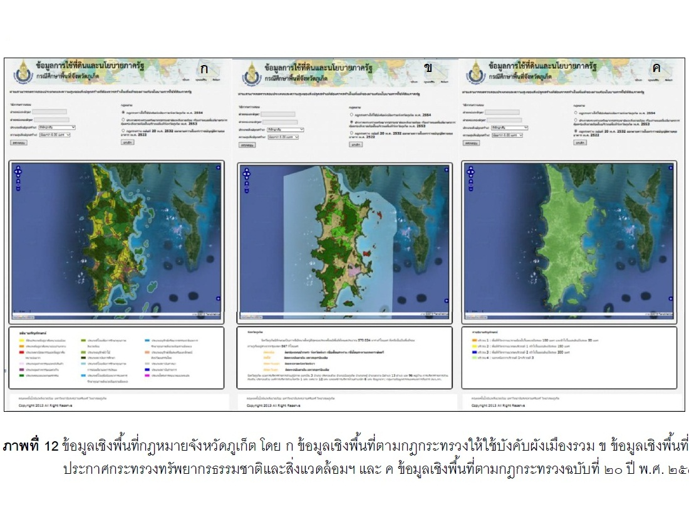
2559
การพัฒนาโปรแกรมประยุกต์บนเว็บสำหรับตรวจสอบการใช้ประโยชน์ที่ดินตามกฎหมายภาครัฐ
-
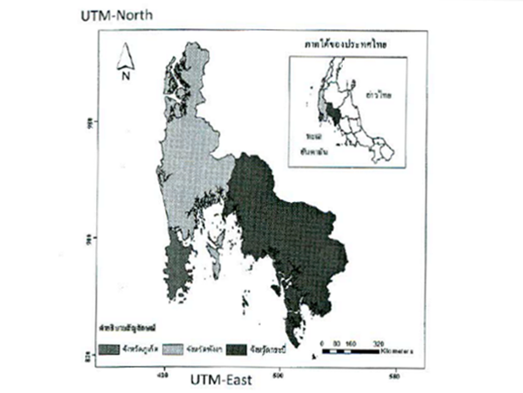
2559
การเปลี่ยนแปลงการใช้ที่ดินในพี้นที่จังหวัดสามเหลี่ยมอันดามัน ประเทศไทย
-
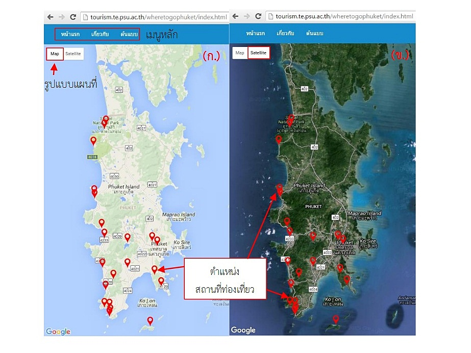
2558
Web application for GIS-based tourism data integration of Phuket province, Thailand
-
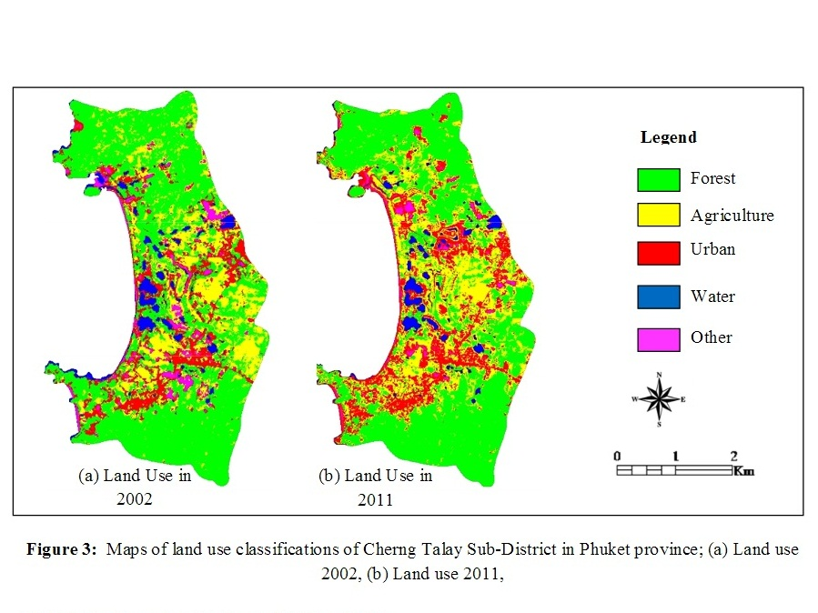
2556
Land use change after Tsunami, Cherng Talay Sub-distric, Thaland, Phuket, Thailand
-
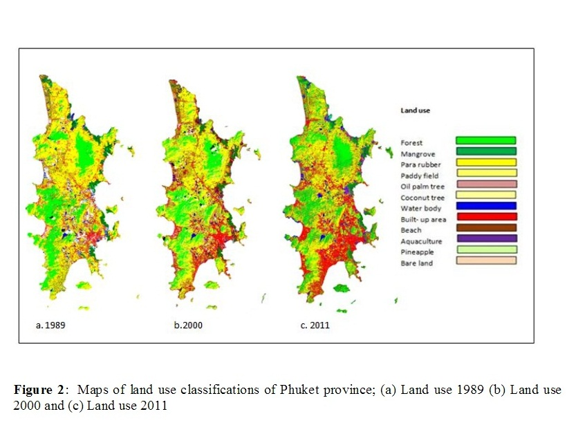
2556
Historical land use and land cover changes, 1989-2011, in Phuket, Thailand
-
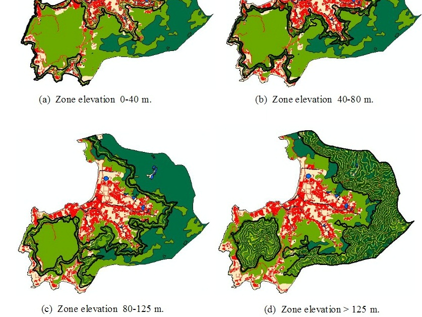
2556
No buildings on lands over 80 meters above sea level? - a case study of Kamala Phuket
-
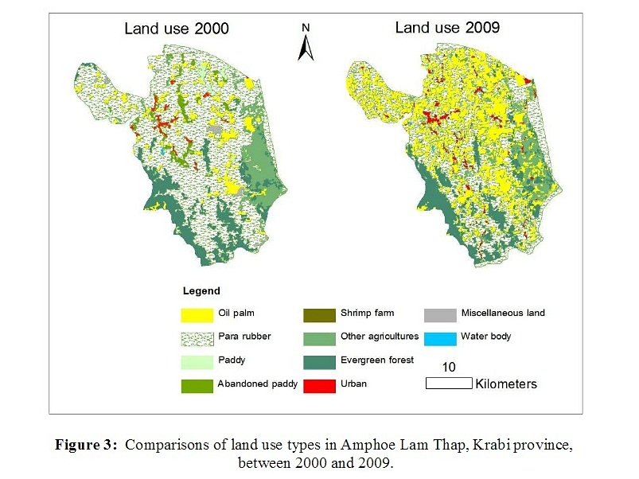
2556
Oil palm expansion in Amphoe Lam Thap, Krabi province, Thailand
-
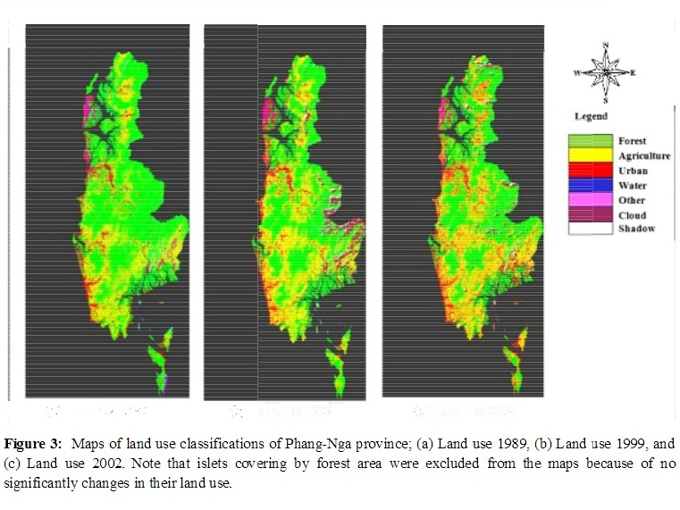
2555
Application of remote sensing for monitoring land cover and land use change in Phang-nga province, Thailand
-
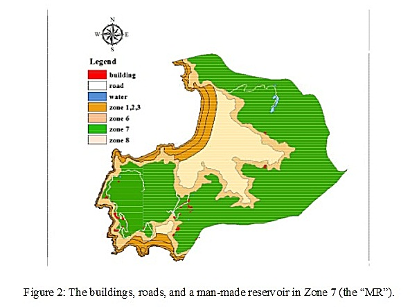
2555
Urban change monitoring and land use policy
-
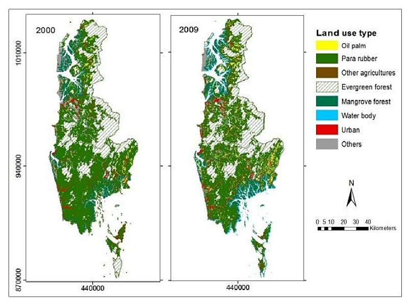
2555
Is oil palm agriculture expansion really restricted to pre-exising cropland?
-
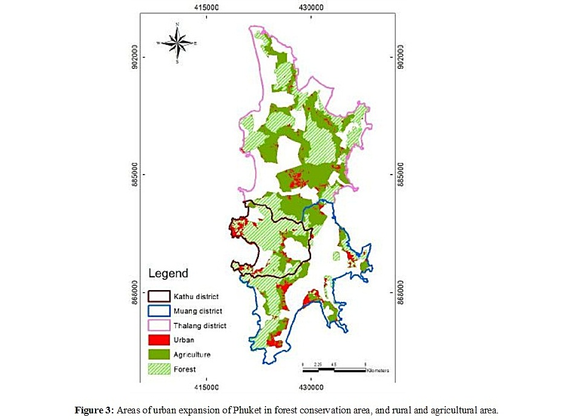
2555
Land use change and the town planning policy of Phuket
{kind=link}
{kind=link}
{kind=link}
{kind=link}